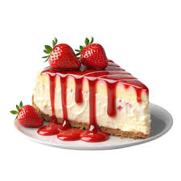

<!DOCTYPE html>
<html lang="en">
<head>
    <meta charset="UTF-8">
    <meta name="viewport" content="width=device-width, initial-scale=1.0">
    <link rel="stylesheet" href="cheesecake.css"/>
    <title>Document</title>
</head>
<body>
    
</body>
</html>
<head>
    <title>Cheese Cake</title>
</head>
<body>
    <div class="logo">
    <h1>Strawberry Cheese Cake </h1>
    </div>
    <div class="container">
    
    </div>
<h2>Ingredients</h2>
<ul>
    <li>400g graham crackers</li>
    <li>150g unsalted butters,melted</li>
    <li>300g marshmallows</li>
    <li>175g unsalted butter,melted</li>
    <li>500g Philadelphia cream cheese,softened</li>
    <li>250ml thickened/whipping cream,warm</li>
    <li>3tbsp powdered gelatin +3tbsp water</li>
    <li>5 drops purple food gel</li>
    <li>3 drops blue food gel</li>
</ul>
<h2>Preparation Instructions</h2>
<ol>
    <li>To prepare crust add graham crackers to a food processor and process until you reach fine crumbs.Add melted butter and pulse
        3-4 times to coat crumbs with butter.</li>
    <li>Pour mixture into a 20cm(8") tart tin.Use the back of a spoon to firmly press the mixture out across the bottom and sides
        of the tart tin.Chill for 30mins</li>
    <li>Begin by adding the marshmallows and melted butter into a microwave safe bowl.Microwave for 30 seconds and mix to combine
        Set aside</li>
    <li>Next,add the gelatine and water to a small mixing bowl and mix to combine.Microwave for 30 seconds</li>
    <li>Add the cream cheese to the marshmallow mixture and use a hand mixer or stand mixer fitted with a paddle attachment to 
        mix until smooth</li>
    <li>Add the warm cream and melted gelatin mixture and mix until well combined</li>
    <li>Add 1/3 of the mixture to a mixing bowl,add purple food gel and mix until well combined.Colour 1/3 of the mixture blue.Split the 
        remaining mixture into two mixing bowls,colour one pink and leave the other white</li>
    <li>Pour half the purple cheesecake mixture into the chill tart crust.Add half the blue and then add the remaining purple
        and blue in the tart bin.Use a spoon to drizzle some pink cheesecake on top.Use a skewer or the end of a spoon to swirl the pink.
        Add some small dots of the plain cheesecake mixture to create stars and then sprinkle some more stars on top before chilling for 2 hours.</li>
    <li>Slice with a knife to serve</li>
</ol>
</body>
</html>